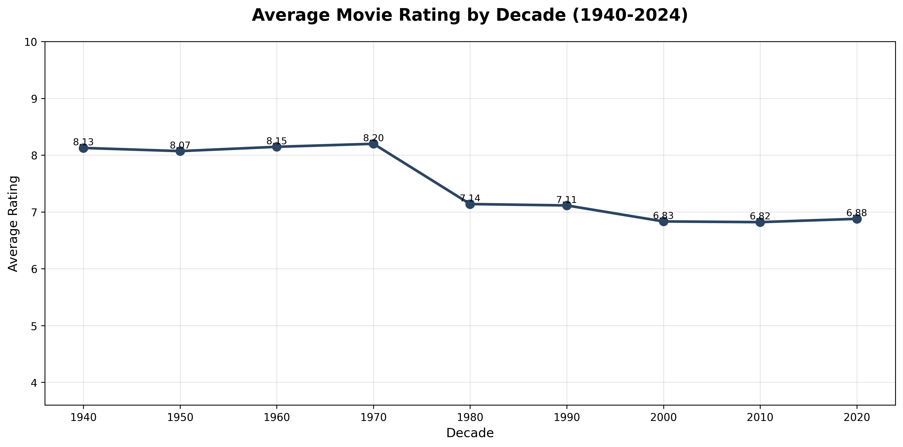
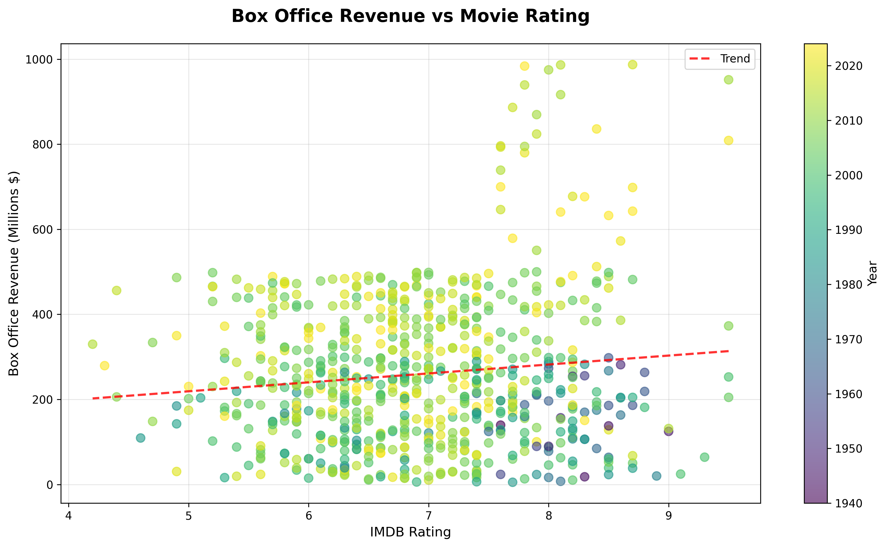
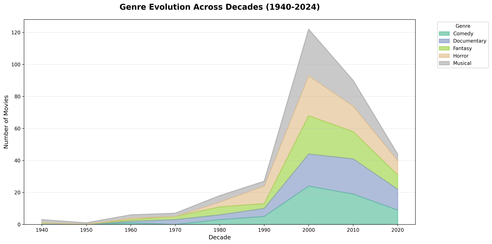

A Data Story
Are movies getting better or worse? Using data from 1,000 IMDB films spanning 1940 to 2024, this analysis uncovers the truth behind cinema's evolution—and challenges our assumptions about modern filmmaking, box office success, and the golden age.

Average IMDB ratings from 1940 to 2024
The data reveals an undeniable trend: audience-rated quality has declined significantly since the 1970s. While film production exploded in the 2000s, average ratings tell a story of quantity over quality. The golden age wasn't just nostalgia—it was measurably real.

Relationship between box office revenue and ratings
Perhaps the most surprising discovery: financial success and quality are nearly independent. The data shatters the assumption that higher budgets or bigger box office numbers indicate better films. The movie industry has mastered making money, but not necessarily making art.

Distribution of top genres from 1940 to 2024
The explosion of production in the 2000s brought unprecedented genre diversity. Documentary, Horror, Musical, Fantasy, and Comedy emerged as dominant forces, showing how the industry expanded beyond traditional Hollywood fare—even as average quality declined.
The data tells a clear story: cinema has evolved from a craft focused on quality to an industry optimized for quantity and profit. The 1970s represented a creative peak that we haven't returned to, even as production budgets and movie counts have skyrocketed.
However, this isn't entirely pessimistic. The explosion in genre diversity and sheer number of films means audiences have more choices than ever. While average quality has declined, the accessibility of filmmaking has democratized cinema in unprecedented ways.
The golden age may be behind us in aggregate ratings, but perhaps we're entering a new era: one where quality films coexist with mass-market entertainment, and viewers have the power to choose their own golden age from an ever-expanding library of cinema.